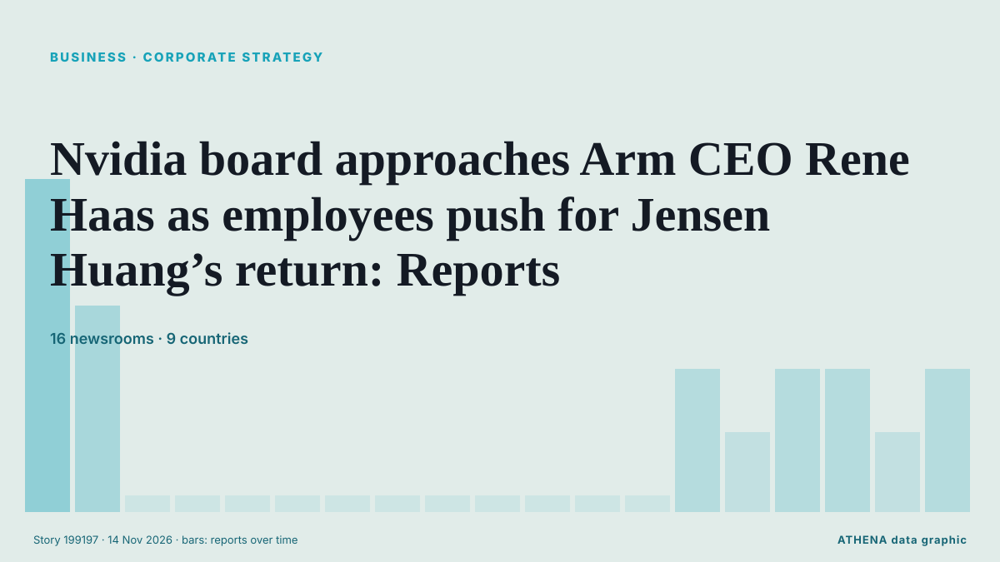

Business, Companies & Investment
SponsoredPresented by  Cybernetics and Artificial Intelligence Lab Welcome to the Cybernetics and Artificial Intelligence Laboratory, established at the Department of Business Administration of the National and Kapodistrian University of Athens. The lab is headed by Professor Dimitrios Thomakos. The lab aims to do research that can be published in top venues. Our research uses tools and methods of Artificial Intelligence, and lies in the following areas: - Forecasting - Decision making - Cyber security - Finance We are always looking forward to collaborating with exceptional students!
Cybernetics and Artificial Intelligence Lab Welcome to the Cybernetics and Artificial Intelligence Laboratory, established at the Department of Business Administration of the National and Kapodistrian University of Athens. The lab is headed by Professor Dimitrios Thomakos. The lab aims to do research that can be published in top venues. Our research uses tools and methods of Artificial Intelligence, and lies in the following areas: - Forecasting - Decision making - Cyber security - Finance We are always looking forward to collaborating with exceptional students!

Corporate strategyNvidia board approaches Arm CEO Rene Haas as employees push for Jensen Huang’s return: Reports
The meeting will focus on how to proceed after Huang said Sunday that he was unfaithful to his wife. from Moneyweb
| 1 Nov | 33 |
|---|---|
| 2 Nov | 116 |
| 3 Nov | 111 |
| 4 Nov | 111 |
| 5 Nov | 111 |
| 6 Nov | 77 |
| 7 Nov | 33 |
| 8 Nov | 58 |
| 9 Nov | 108 |
| 10 Nov | 121 |
| 11 Nov | 96 |
| 12 Nov | 91 |
| 13 Nov | 48 |
| 14 Nov | 2 |
Jo Whiley recounts message from Russell Brand which makes her ‘shudder’
The disgraced comedian has been jailed for 10 and a half years for raping one woman and sexually assaulting three others. from Evening Standard (London)
Jensen Huang resigns as NVIDIA CEO, Colette Kress takes over
Kress joined Nvidia in 2013 as CFO and has regularly appeared on earnings calls with CEO Huang. from Express Tribune
Congress Summons Ex-Nvidia CEO Jensen Huang, Lutnick Over Chip Exports to China
House panels requested December interviews with Huang and Nvidia's top lawyer as scrutiny shifts to Commerce's oversight of chip exports. from Decrypt
NCC recalls more than 23,000 Cherry and Omoda vehicles
The carmaker has filed a recall for certain Omoda and Tiggo brand vehicles built between 2022 and end-2023. from The Business Times
Hapag-Lloyd Q3 2026 profit rises to €860 million
Hamburg, Germany (Ports Europe) November 12, 2026 – Hapag-Lloyd raised its 2026 earnings outlook after Group profit rose to €860 million in the third quarter of 2026, from €138 million in the third… from Ports Europe
Samsung in talks to buy data center cooling firm Modine, Bloomberg News reports
NEW YORK: Samsung Electronics is in talks to acquire Modine Manufacturing, a US-listed maker of cooling systems for data centers, Bloomberg News reported on Thursday, citing people familiar with the… from New Straits Times
Cerebras raises its 2026 forecast and signs Microsoft as a cloud customer
Cerebras shares rose about 17% in after-hours trading on Thursday. from The Next Web
Kia to invest $2b in India to ramp up production
South Korean automaker Kia Corp. said Friday it plans to invest $2 billion in a second manufacturing plant in India to expand its production capacity in the growing automobile market. from Korea Herald
Renny Harlin Launches Harlin House Fellowship for Emerging European Filmmakers, Taps Colin Trevorrow, Tim Miller as Advisors
Finnish director Renny Harlin has set up Harlin House, a production company that will mentor emerging European directors and help them turn their projects into genre features with commercial reach. from Variety
Ukrainian-founded drone maker UForce raises $700 million at $6 billion valuation
The investment will help UForce expand production for Ukraine and supply allied countries with systems suited to modern warfare, the company said. from Kyiv Independent
Botswana Eyes De Beers Tech Dividend
President Duma Boko says Botswana’s planned increase in De Beers ownership is as much a technology play as a diamond investment BONGANI MALUNGA President Duma Boko has positioned Botswana’s proposed… from The Botswana Gazette
Vietnam's top leader receives Chairwoman of Russia’s Federaion Council
General Secretary of the Communist Party of Vietnam Central Committee and President To Lam received Chairwoman of the Federation Council of the Federal Assembly of Russian Valentina Matviyenko in… from Tuoi Tre News
Comedian Lucy Beaumont reveals herself as David Walliams whistleblower
"I feel like there’s a window of opportunity to change things" from NME
Amitabh Bachchan’s family hosted Sonia Gandhi’s pre-wedding ceremonies, memoir recalls
Sonia Gandhi has written about the role Amitabh Bachchan’s family played when she first came to India. from Gulf News
Vizag CII Summit: ReNew to invest ₹80,000 crore in green data centre, solar manufacturing in Andhra Pradesh
Investments include a ₹67,000-crore Green Hyperscale Data Centre in Anakapalli, ₹11,000-crore polysilicon and metallurgical silicon manufacturing facilities in Anakapalli and Nellore; and… from The Hindu
Black Friday shoppers issued 'vital' warning ahead of major sales
The much-anticipated annual retail event falls on 27 November. from Manchester Evening News
Burberry reports sales boost from trench coats and says turnaround ‘working’
The luxury fashion firm said revenues grew 6% to £1.1 billion in the six months to September 26. from Evening Standard (London)
Afreximbank Opens $2bn Financing Window for Cross River, Other African States
Bassey Inyang in Calabar The African Export-Import Bank (Afreximbank) has opened a $2 billion financing facility for Cross River State and other African sub-sovereign governments to fund bankable… from ThisDay (Nigeria)
Poste Italiane posts best-ever profit for first nine months of year
(ANSA) - ROME, 12 NOV - Poste Italiane said Thursday that it made an adjusted net profit of 1.88 billion euros in the first nine months of this year, having generated income of 629 million euros in… from ANSA English
Canadian co signs MoU with Mari Energies
ISLAMABAD: Ivanhoe Mines signed a memorandum of understanding with Pakistan’s Mari Energies on Thursday, the Canadian company’s chairman Robert Friedland said on the sidelines of the Pakistan… from Business Recorder
ICTSI net income rises 20% in January-September 2026
Manila, Philippines (Ports Europe) November 13, 2026 – ICTSI’s net income rose 20% to €808 million in January-September 2026, but two newly acquired terminals drove most of the 13% rise in container… from Ports Europe
Donald Trump Jr. exits advisory role at prediction market Kalshi
Donald Trump Jr. is no longer a paid adviser for Kalshi, the prediction market company said Thursday. from The Canadian Press (via CityNews)
Qualcomm begins India job cuts as handset chip sales slide
Qualcomm has started laying off employees in India, its largest engineering base outside the US, as the chipmaker carries out a performance-focused global workforce reduction amid a fall in… from DigiTimes Asia
Nebius signs $12bn in deals for Q3, all deals reportedly cover its capex
Company also notes delays to Microsoft data center project. from Data Center Dynamics
Yogi Adityanath: Bulldozers now UP brand, make them here
Even after mounting criticism, including a Supreme Court judgement, Uttar Pradesh Chief Minister Yogi Adityanath on Thursday described bulldozers as a brand associated with the state. from Deccan Herald
SpaceXSI’s Grok Build left 35,000 apps open, security firm Claroc says
Anyone who found the address of a Grok Build app could open more than 35,000 of them, security firm Claroc found in research published on 10 November. from The Next Web
Alina Habba Mildon loses $50M contract after Trump criticism
Alina Habba Mildon, a former attorney for President Trump, has reportedly been fired from a multimillion-dollar contract with a family company tied to a billionaire banker who recently received a… from The Hill
Finland to allocate over EUR 37M for Ukraine’s reconstruction
Finland’s Ministry for Foreign Affairs is allocating €37.3 million to support Ukraine’s reconstruction under the Strategic Investment and Support for Ukraine (SISU) program. from Ukrinform (English)
EU explores deeper Syria partnership, flags concern over Russia role
BRUSSELS/DAMASCUS, Nov 11 - The European Union is weighing a broad upgrade in ties with Syria, including security sector reform, investment and a revival of a long-frozen trade accord, according to… from The Straits Times
Alex Karp says he's a lifelong Democrat — and Palantir's products are 'essentially progressive'
Palantir CEO Alex Karp told Politico that he's a lifelong Democrat, and that President Donald Trump mishandled immigration. from Business Insider
Mohamed Alabbar teases reveal of new ‘big tower’ in Dubai
The founder and managing director of Emaar Properties said the tower tender will be "held back" until the regional disruption "cools down" from Arabian Business
Thessaloniki Tax Fraud Case: One Defendant Remanded in Custody
Four defendants have been released under restrictive conditions following questioning, while prosecutors allege that a criminal network used shell companies and front managers to defraud the Greek… from To Vima (English)
Air India’s Losses Are Still Bigger Than Singapore Airlines’ Profit
Singapore Airlines’ India bet is costly. from Skift